{kind=link}
{kind=link}
{kind=link}
{kind=link}
(3 en 1)
{kind=link}

{kind=link}
{kind=link}
{kind=link}
{kind=link}
(single link)
| Adaptateur | ||||||
|---|---|---|---|---|---|---|
| 4 | Adaptateur Mini DisplayPort vers Display Port | 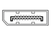 | 17/07/2019 [OK] | |||
| 1 | Adaptateur USB vers VGA | 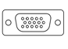 | 17/07/2019 [OK] | |||
| 1 | Adaptateur Mini DisplayPort vers HDMI femelle | 24/09/2018 | ||||
| 1 | Adaptateur Mini DisplayPort vers HDMI / VGA / DVI
(3 en 1) |
Peut être Mounir | ||||
| 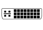 | ||||||
| 1 | Adaptateur Display Port vers HDMI |
|
17/07/2019 [OK] | |||
| 2 | Adaptateur Display Port vers DVI | 17/07/2019 [OK] | ||||
| 1 | Adaptateur Mini DisplayPort vers DVI | 17/07/2019 [OK] | ||||
| 1 | Adaptateur Display Port vers VGA | |||||
| 1 | Convertisseur Mini HDMI mâle vers VGA | 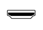 | 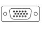 | 17/07/2019 [OK] | ||
| 2 | Adaptateur DVI-D vers DVI-D
(single link) |
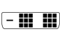 | 24/09/2018 | |||
| 1 | Adaptateur Thunderbolt vers VGA | 19/07/2019 [OK] | ||||
| 1 | Adaptateur Thunderbolt vers DVI | 19/07/2019 [OK] | ||||
| Nombre | Type | Statut | Emprunteur | Date | ||
| 2 | Webcam
Logitech HD Pro C920 |
M/N : V-U0028
S/N : 1506LZ0NEXN8 P/N : 860-000334 |
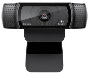 | Alex Lambert (1) | 17/07/2019 [OK] | |
|---|---|---|---|---|---|---|
| une acheté en novembre 2017 : M/N : V-U0028 - S/N 1649LZ0FSFB8 - P/N : 860-000334 | ||||||
| 2 | Micro
Jabra Speak 510 |
PHS002W
P/N : 7510--109 |
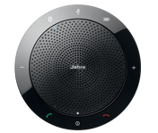 | 17/07/2019 [OK] | ||
| Nombre | Type | Statut | Emprunteur | Date | ||
| 1 | Adaptateur mSATA SSD vers SATA 2,5
(date d'achat : 2017) |
Information sur le produit | 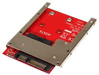 | |||
|---|---|---|---|---|---|---|
| 1 | mSATA vers port SATA
(date d'achat : 2017) |
Manuel d'utilisation | 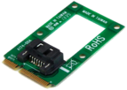 | |||
| 1 | Hard Drive mDOCK Duplicator
(date d'achat : 2017) |
Manuel d'utilisation | 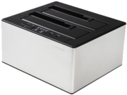 | |||
| Nombre | Type | Statut | Emprunteur | Date | ||
| 1 | Station d’accueil Dell Dock WD15
(date d'achat : 2017) |
Manuel d'utilisation | 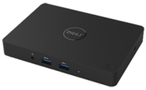 | |||
|---|---|---|---|---|---|---|
| 2 | Adaptateur mobile Dell USB-C | 17/07/2019 [OK] | ||||
| 1 | Adaptateur réseau USB / RJ45 | 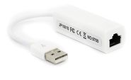 | 17/07/2019 [OK] | |||
| 1 | Adaptateur réseau
Thunderbolt / RJ45 |
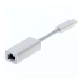 | 17/07/2019 [OK] | |||
| 1 | Disque dur 2.5 / 1 To | 17/07/2019 [OK] | ||||
| 3 | Disque dur 2.5 / 2To | 17/07/2019 [OK] | ||||
Mis à jours le 17 Juillet 2019
{kind=link}
{kind=link}
{kind=link}
{kind=link}
{kind=link}
{kind=link}
{kind=link}
{kind=link}
{kind=link}
{kind=link}